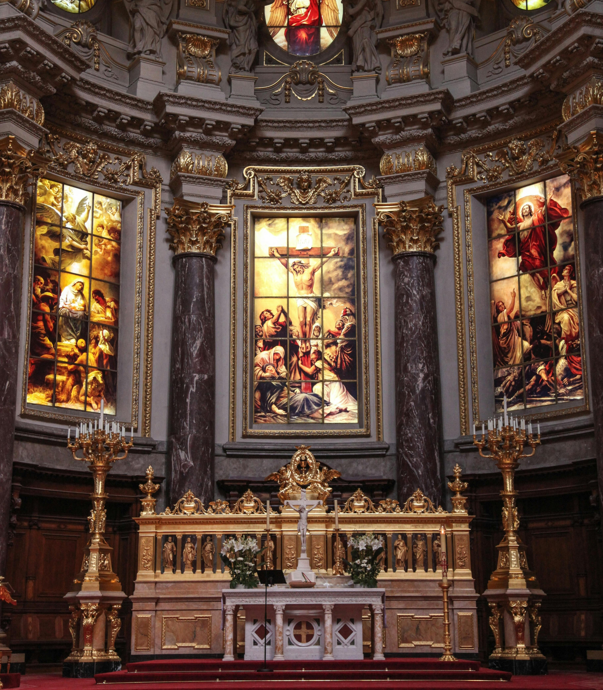
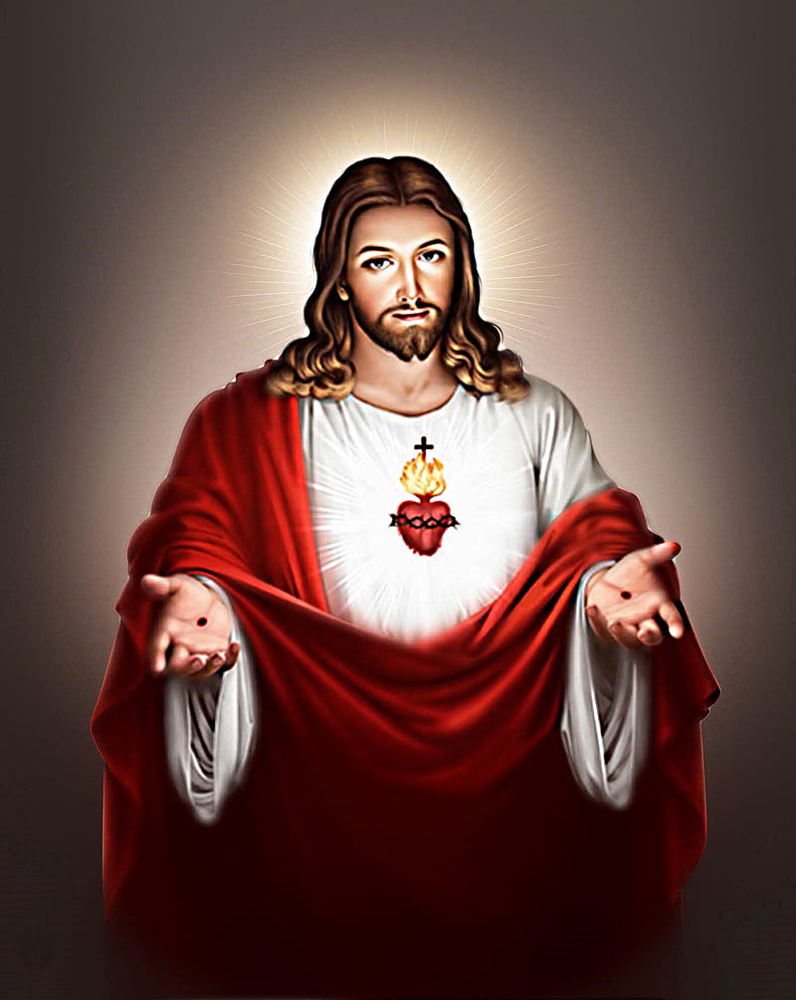
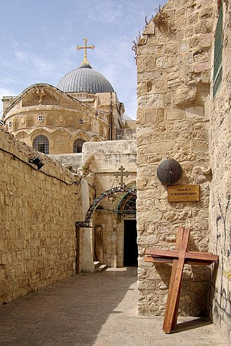

This is the most practiced religion in Ireland. Christianity is an Abrahamic monotheistic religion, which states that Jesus is the Son of God and rose from the dead after his crucifixion, whose coming as the messiah (Christ) was prophesied in the Old Testament and chronicled in the New Testament. It is the world's largest and most widespread religion with over 2.3 billion followers, comprising around 28.8% of the world population. Its adherents, known as Christians.

Jesus is central to Christianity, believed to be the Son of God and the messiah (Christ), as described in the Bible.

The Church of the Holy Sepulchre, also known as the Church of the Resurrection, is a fourth-century church in the Christian Quarter of the Old City of Jerusalem. According to traditions dating to the fourth century, the church contains both the site where Jesus was crucified at Calvary, or Golgotha, and the location of Jesus's empty tomb, where he was buried and, resurrected. Both locations are considered immensely holy sites by most Christians.
